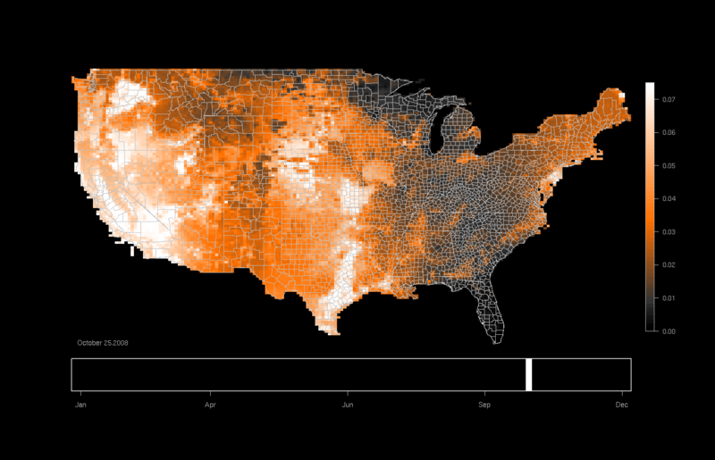
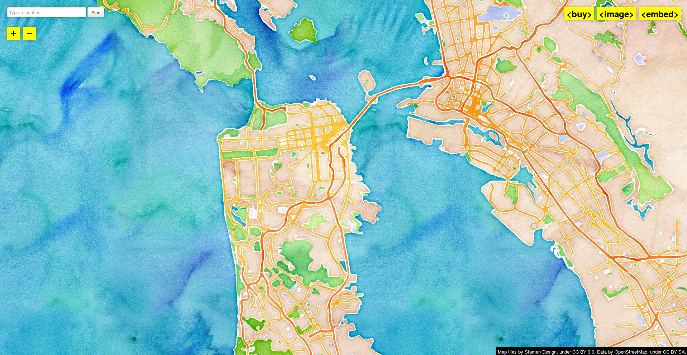
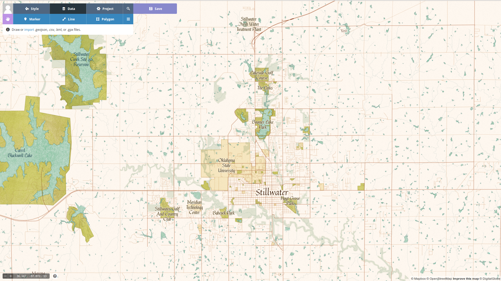
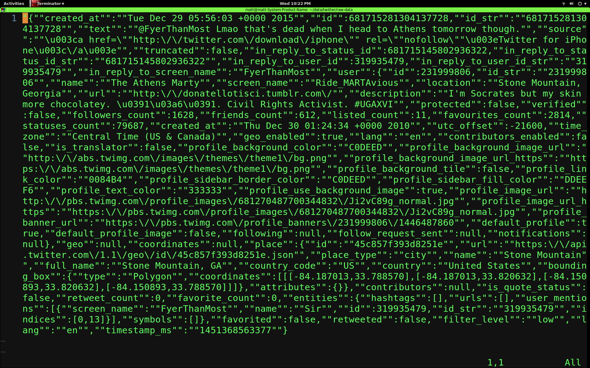
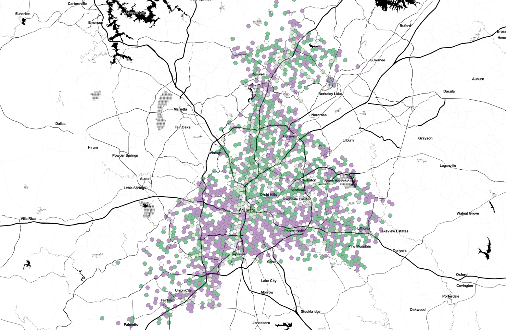

Location-based social media behavior and perceptions: Views of university students
Matthew Haffner1, Adam J. Mathews1,
Emily Fekete2, G. Allen Finchum1
1 - Department of Geography, Oklahoma State University
2 - American Association of Geographers
https://mhaffner.github.io
VGI and LBSM
- LBSM is the way that people share
- Biases on platforms
- The demographics of contributors has implications for analysis
Research focus
- Demographics, usage patterns, and perceptions
- Questions
- Are there differences in terms of gender, race, and academic standing?
- What are the implications?
Data
Methods
Results
Implications
Location-based social media behavior and perceptions: Views of university students
- Volunteered Geographic Information (VGI) – the act of contributing
information about one's location.
- Voluntary (opt-in)
- Involuntary (opt-out)
VGI types
- Citizen Science (eBird)




VGI types
- Citizen science (eBird)
- Mapping projects (OSM)






VGI types
- Citizen science (eBird)
- Mapping projects (OSM)
- Location-based social media (Twitter)
What is the significance of this research?
- LBSM can be used
- In disaster situations
- To study social movements
- As a replacement for other data sources
- But is it valid for studying spatial process?
Case studies
- Project 1: Non-English Twitter activity in Houston, Texas
- Project 2: Android vs. iOS activity in Atlanta, NYC, and Detroit
Workflow
- Operating system: Manjaro (Arch Linux derivative)
- Editors: Emacs/Vim
- Scraping: Python
- Version control: Git (GitLab and GitHub)
- Database: ElasticSearch
- Data management tools: Bash, Sed, Python
- Spatial calculations: R and ElasticSearch
- Spatial visualization and mapping: R and QGIS






VGI, Twitter, and Big Data
Matthew Haffner
matt.haffner@okstate.edu
@geohaffner
https://mhaffner.github.io